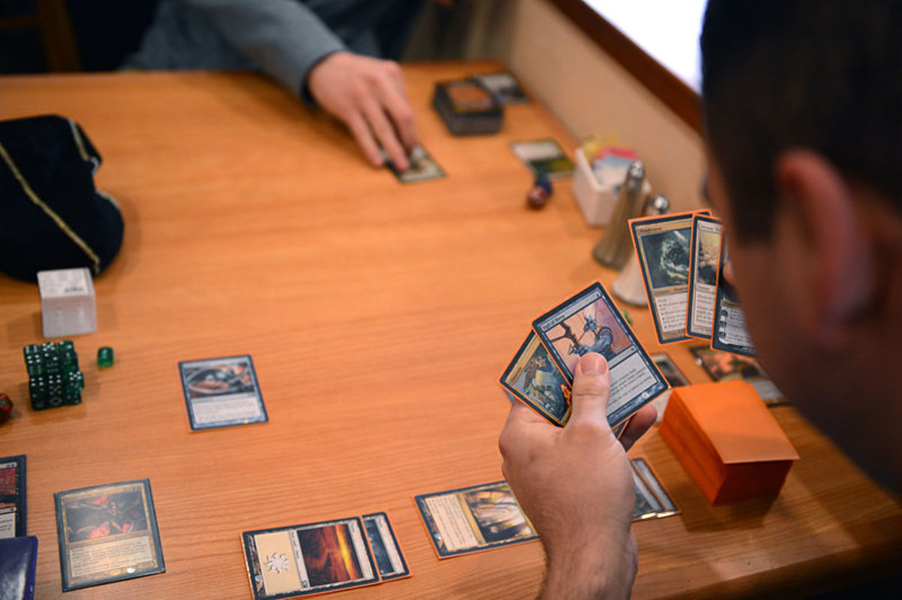

Magic: The Gathering
Magic, é um jogo de cartas colecionáveis (TCG, Trading Card Game) criado por Richard Garfield, no qual os jogadores utilizam um baralho de cartas construído de acordo com o seu modo individual de jogo para tentar vencer o baralho adversário. Criado em 1993, Magic foi o primeiro TCG produzido e continuado até hoje, quando conta com aproximadamente 12 milhões de jogadores ao redor do mundo.